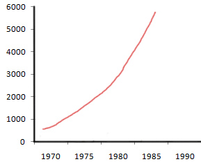
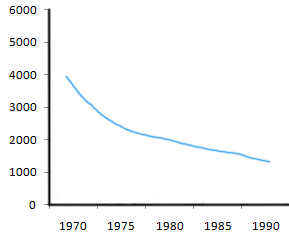
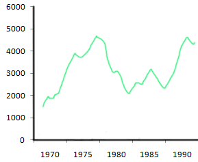
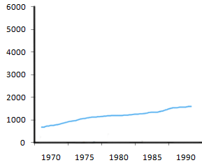

Vocabulary to describe graphs
1. Introducing the graph
The graph / table / pie chart / bar chart / diagram ...
- gives information about/on ...
- provides information about/on ...
- shows ...
- illustrates ...
- compares ...
- explains why ...
- describes ...
- draws the conclusion of (a survey) ...
Example: The pie charts provide information on the proportion of males and females working
in the agricultural sector.
2. Types of changes (Nouns & Verbs)

Upward Trend
Nouns
- a rise (of)
- an increase (of)
- a growth (of)
- a peak (of)
- a surge (of)
Example: a rise of prices
Verbs
- to rise
- to increase
- to surge
- to grow
- to peak
- Large rises: to rocket, to soar, to leap (→ leapt)

Downward Trend
Nouns
- a fall (in)
- a decrease (in)
- a decline (in)
- a dip (in)
Example: a fall in prices
Verbs
- to fall
- to decrease
- to decline
- to dip
- to dive
- to plunge
- Large falls: to plummet

Fluctuations
Nouns
- a fluctuation (of)
- a variation (in)
Example: a fluctuation of prices
Verbs
- to fluctuate
- to vary
3. Degree & Speed of Changes (Adverbs & Adjectives)
Big & Fast Changes
Adverbs
- sharply
- suddenly
- rapidly
- abruptly
- dramatically
- significantly
- considerably
- markedly
- wildly
Example: the prices rose sharply
Adjectives
- sharp
- sudden
- rapid
- abrupt
- dramatic
- steep
- significant
- considerable
- marked
- substantial
- spectacular
Example: there was a considerable growth

Small & Gradual Changes
Adverbs
- slightly
- gently
- gradually
- steadily
- modestly
- marginally
Example: the prices increased modestly
Adjectives
- slight
- gentle
- gradual
- steady
- consistent
- modest
- marginal
Example: there was a gradual decline
4. Useful phrases for proportions & numbers